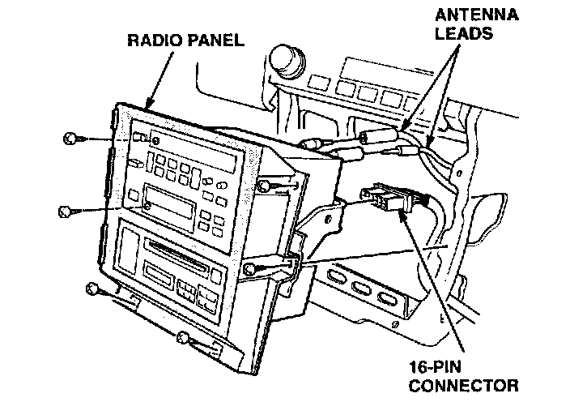
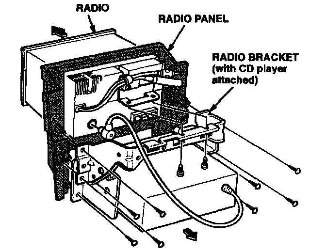
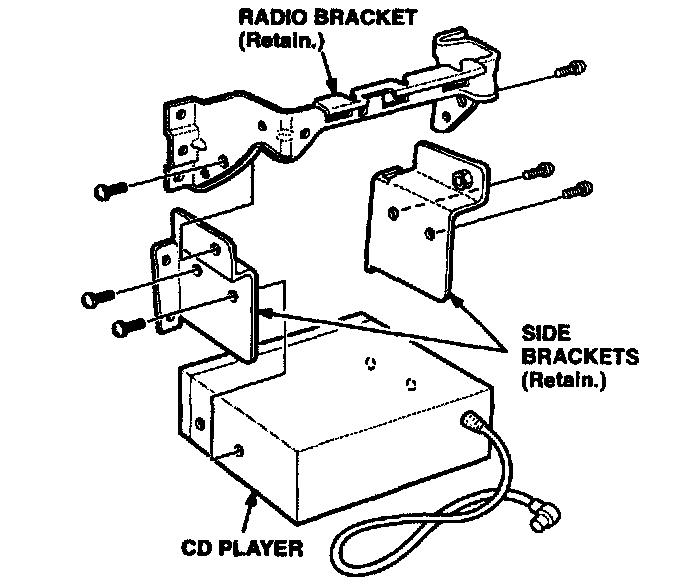
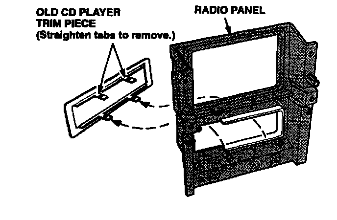
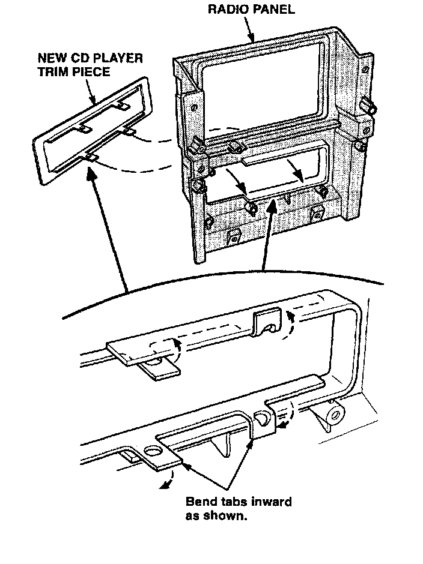
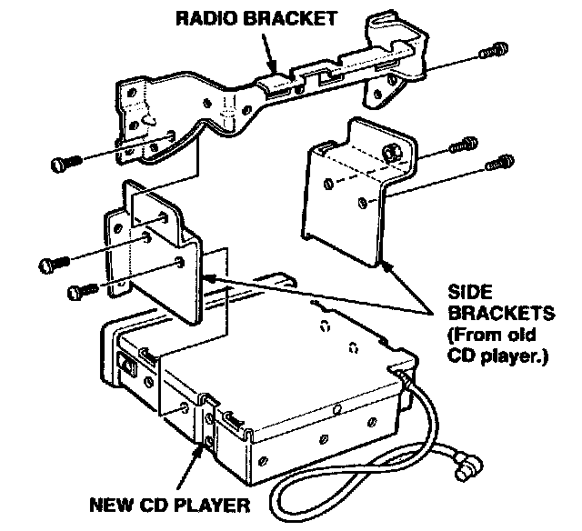
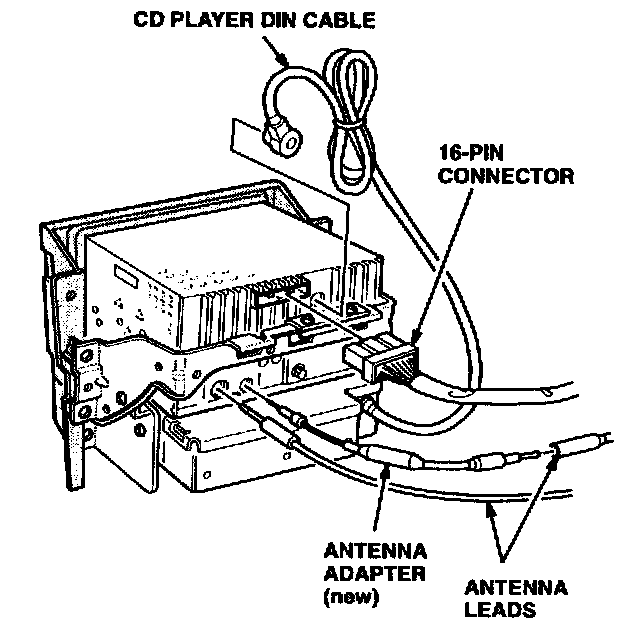

Repair Procedure
Removing the Old Radio and the CD Player1. Write down the customer's radio station presets, and disconnect the negative cable from the battery.

2. Remove the radio panel, and disconnect the 16-pin connector and the antenna leads from the radio and the CD player.
3. Remove the center console; refer to section 20 of the appropriate service manual.

4. Remove the radio and the radio bracket from the radio panel.

5. Remove the CD player from the radio bracket, then remove the side brackets from the CD player.

6. Straighten the tabs of the old CD player trim piece, and remove it from the radio panel.
7. Reinstall the radio panel and the center console.
8. Pack the loose bolts and brackets in a plastic bag, and leave the bag inside the glove box.
9. Reconnect the negative battery cable, and reset the customer's clock.
10. Return the old radio and the CD player as described in EXCHANGE PROCEDURE.
Installing the Upgraded Radio and the CD Player
11. Disconnect the negative cable from the battery.
12. Remove the center console and the radio panel.

13. Install the new CD player trim piece onto the radio panel, and bend the tabs to secure it.

14. Retrieve the plastic bag form the glove box, install the side brackets onto the new CD player, then install the CD player onto the radio bracket.
15. Install the radio bracket onto the radio panel, and install the new radio.

16. Attach the CD player DIN cable to the radio, and insert the small end of the antenna adapter, supplied with the upgrade kit, into the antenna receptacle at the back of the new radio.
17. Connect the 16-pin connector and the antenna leads to the radio and the CD player, and reinstall the radio panel.
18. Reinstall the center console.
19. Reconnect the negative battery cable, enter the anti-theft code, and reset the customer's radio station presets.
20. Reset the clock.
21. Check the operation of the radio, the tape player, and the CD player according to the owner's manual supplied with the upgrade kit.
22. Put the anti-theft card and the owner's manual for the upgraded radio/CD player in the glove box.